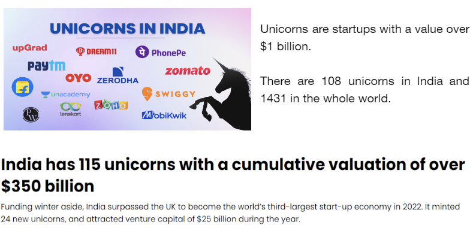
But how can companies that are not yet profitable be valued so high? How are they valued and on what merits ? These are the questions we will find answers to as we progress in this blog.
WHAT IS VALUATION?
“Do you know the value of time?” , “You won’t understand the value of time now!” The number of times we've heard this from our parents is hilarious. What do people mean by saying value ? Yeah, the cost of utility something provides.
Valuation is the analytical process of determining the current (or projected) worth of an asset or a company. The market capitalization of a company is a typical illustration of market valuation. This multiplies a company's share price by the total number of outstanding shares.
When a company decides to buy or merge with another company, for example, the acquisition of Uber Eats by Zomato, the valuation of Uber eats is needed for the transaction to be satisfactory for both sides. Valuation of a startup is crucial to its further funding rounds, as the cost of equity will be more for highly valued companies. Swiggy's valuation was raised to $10.7 billion after a $700-million fundraise in Jan 2022. When a company decides to go public, valuation is crucial to determine its stock price, for example HDFC Life IPO price band being set at ₹275 to ₹290 per share.
Bermuda Triangle of Valuation
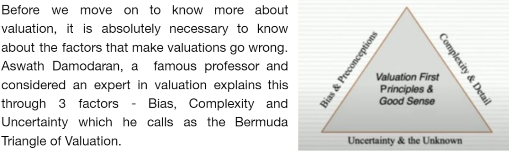
Bias refers to the preconceptions that find their way into our valuations and make the calculations and numbers go wrong. These preconceptions can range from thoughts about the company’s future to favoritism for the CEO. It is very necessary to avoid such bias.
Complexity that often gets in the way of simplicity is inherent in human nature. It is important that we keep in mind to keep things simple during valuations without overcomplicating.
Uncertainty is something that is not really in our control. The assumptions we make about the macroeconomic factors or the quantitative measures that we decide to use in our valuation are after all estimates and there is always a standard error associated with estimates. Our motive must always be to minimize this error.
Types of Valuation
Valuation can be broadly classified into two types:-
1. Intrinsic Valuation: It is the estimated worth of an asset following the objective analysis of its fundamentals and internal data – without reliance on external factors. It doesn't account for anything related to other companies, thus the name “intrinsic”. The most common mode of intrinsic valuation is DCF Analysis that we shall be learning a great deal about, ahead in this blog.
2. Relative Valuation: It compares a firm’s value to that of its competitors. One of the most popular relative valuation multiples is the price-to-earnings (P/E) ratio. It is calculated by dividing stock price by earnings per share (EPS), and is expressed as a company's share price as a multiple of its earnings. A company with a high P/E ratio is trading at a higher price per dollar of earnings than its peers and is considered overvalued. Likewise, a company with a low P/E ratio is trading at a lower price per dollar of EPS and is considered undervalued. This framework can be carried out with any multiple of price to gauge relative market value. Therefore, if the average P/E for an industry is 10x and a particular company in that industry is trading at 5x earnings, it is relatively undervalued to its peers.
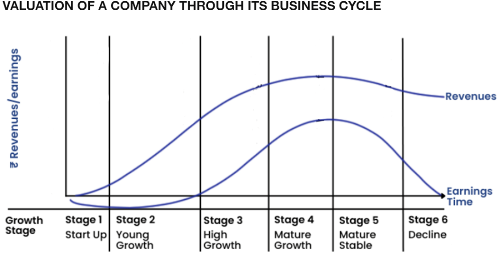
There are many factors to the valuation of a business; assets, liabilities, revenue, patterns of cash returned to shareholders, changes in the company’s debt-to-equity ratio, economic conditions in the company’s industry etc.
Amazon has great revenue but poor profitability because they keep investing in growth and innovation, yet they are still a valued and publicly traded stock because of their growth.
Many startups which are valued high are still unprofitable initially, they are valued on the basis of their assets and revenue.
Asset-based valuation: One of the simplest methods to value a business with no profits is to look at its assets. This means adding up the value of all the tangible and intangible assets of the business like property, equipment, inventory, patents, trademarks etc. Then, we subtract the value of all the liabilities, such as debt, taxes, and accounts payable. So the worth of a company based once it sells its assets and pays off the liabilities is called net asset value or book value of the business. This method works well for businesses that have a lot of assets relative to their revenue, such as manufacturing, real estate, or mining companies.
Revenue-based valuation: Another method to value a business with no profits is to look at its revenue. This means multiplying the annual or projected revenue of the business by a certain multiple, depending on the industry and growth rate. For example, a software company might have a revenue multiple of 3.3x, while a retail store might have a revenue multiple of 2.1x. This method works well for businesses that have a high revenue growth potential, such as startups, e-commerce, or technology companies.
There are many valuation methods used in varying scenarios as per the requirement of the firm or purpose of valuation. In this blog we will focus on the Discounted Cash Flow method of valuation. It is an intrinsic method of valuation as it takes in account the cash flow data of the company only. Before we jump into DCF , it is important to understand the Time Value of Money, the underlying concept of DCF.
Time Value of Money
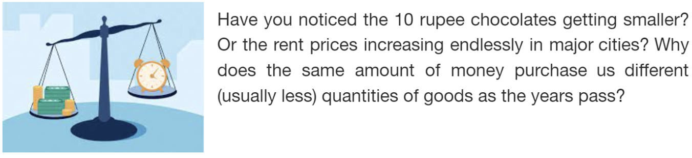
It is because the value of money changes with time, mainly due to inflation, opportunity cost and preference of the masses. Time value of money is a core financial concept that states that the value of money now is more than its future. Essentially, a sum of money’s value depends on how long you must wait to use it. The sooner you can use it, the more valuable it is.
When time is the only differentiating factor, the money you receive sooner will always be more valuable. Yet, sometimes, there are other factors at play. For instance, what’s more valuable: $1,000 today or $2,000 one year from now?
TVM calculations “translate” all future cash to its present value. This way, you can directly compare its values and make financially informed decisions.
Let us understand how to make these calculations.
First let us grasp the importance of a timeline in TVM calculations
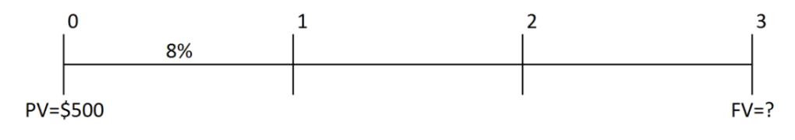
A series of cash flows can be graphically represented using a cash flow timeline. A timeline depicts the timing and amount of the cash flows.Jargon time!
Future value (FV): Future value is the value of an investment or asset on a specific date in the future. To put it another way, the future value is the amount of money a given investment will be worth after a certain period, assuming a specific rate of return (interest rate).
Present value (PV): Present value (PV) is the current value of a future sum of money or stream of cash flows given a specified rate of return. Present value takes the future value and applies a discount or interest rate that could be earned if invested.
Discount rate (i): It is the interest rate used for determining the present value of cash flows using future cash flows.
Number of periods (n): It can be either be yearly, monthly or quarterly
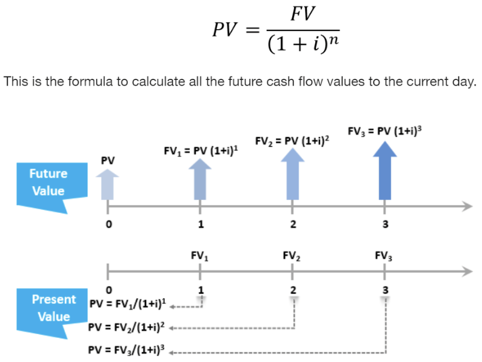
Now that we have understood TVM, we are ready to delve into DCF.
Discounted Cash Flow:
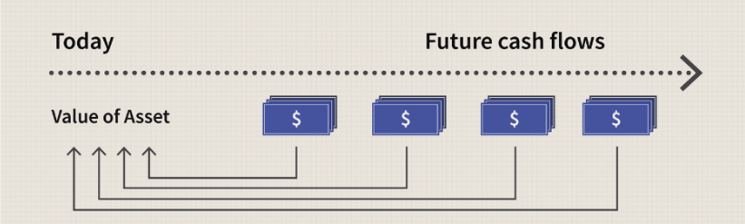
DCF is a method of valuation, according to which a company's value is the sum of future cash flows discounted back to its current value.
The first step is to project out future cash flows (FCF) for 5 to 10 years by making assumptions on the company’s growth and EBIT margins. Next, you calculate the terminal value and then discount your projected FCF and terminal value using your WACC to present value and sum them together.
We will look into each step in detail!
STEP 1: PROJECTION OF FREE CASH FLOWS
Depending on whether we are performing valuation of the entire business and all capital providers or just the equity investors, the selection of the type of free cash flow changes.
If we are valuing just the equity, we’ll be estimating the free cash flows to equity (FCFE) in future years, and discounting back at the cost of equity, i.e., the rate of return that equity investors can make on other investments in the public market, of equivalent risk.
If we are valuing all operating assets in a business, we will estimate free flows of the entire firm (FCFF), and discount these cash flows back to today at a weighted average of the costs of equity and debt, with the weights reflecting the proportions of each funding type.
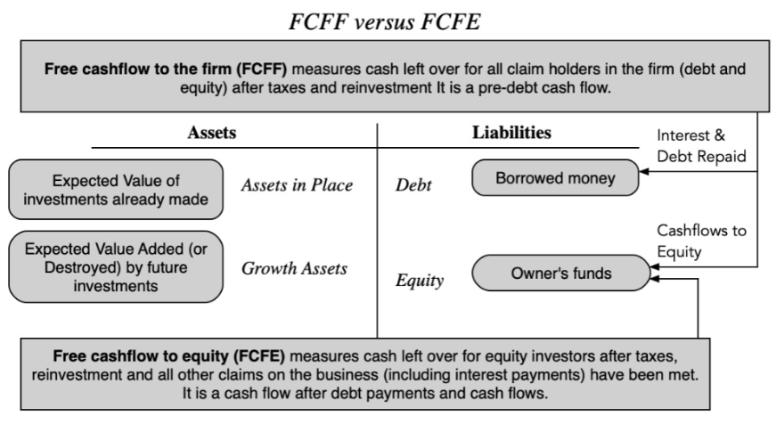
We will assume we are performing DCF valuation for the firm and thus taking FCFF as the projected cash flows. The formula for FCFF is follows:
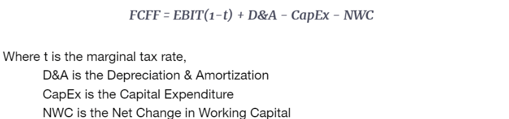
Capital Expenditures (CapEx): Cash that we spend on Plant, Property, and Equipment (PP&E). For example Apple spends $100 million on a new office building, that's $100 million of Capital Expenditures. CapEx is NOT found in your income statement because they are usually really large one-time expenses and the income statement tries to capture expenses that occur regularly. Instead, the costs of CapEx are depreciated over time (see below).
Depreciation & Amortisation (D&A): The monetary value of a tangible (can be touched eg: machinery) asset decreases over time due to use, wear and tear or obsolescence. This decrease is measured as depreciation.
The depreciation equivalent of intangible assets(cannot be touched eg:brand image) is amortization.
In the CapEx example, if Apple bought a new building for $100 million and that building had a "useful life" of 20 years, the annual D&A would be $100 million / 20 = $5 million a year. D&A is found in your income statement. D&A allows you to fairly deduct CapEx spend over a period of time but it's not actual cash that you're spending (instead the actual cash was a one-time payment in CapEx).
Net Working Capital (NWC): For a DCF, this is our current OPERATING assets (i.e. excludes cash, includes assets like inventory, accounts receivable, etc.) minus our current OPERATING liabilities (i.e. excludes debt, includes accounts payable, deferred revenue, etc.). NWC looks at the regular cash inflows and outflows from a company's day to day operations.
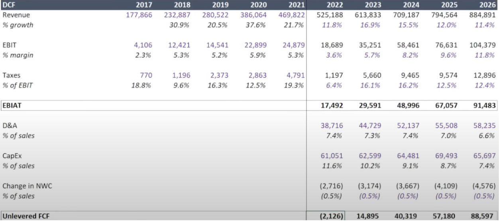
EBIT = Earning Before Interest and taxes.
%growth = (Current year revenue - Prev year revenue) / Prev year revenue
%margin = EBIT/Revenue
In the above excel sheet, we have data till 2021. We assume the future cash flows extrapolating the previous ones. Assessing historic data and industry growth rates also helps in making assumptions.
STEP 2: CALCULATION OF WACC
WACC (Weighted Average Cost of Capital) is a popular method for calculating the required rate of return (RRR) since it expresses the return that investors and shareholders want to provide capital to the company in one figure. Investors expect more significant returns; a firm's WACC is likely higher if its stock is volatile or debt is riskier.
WACC is the discount rate that a company uses to estimate its net present value.
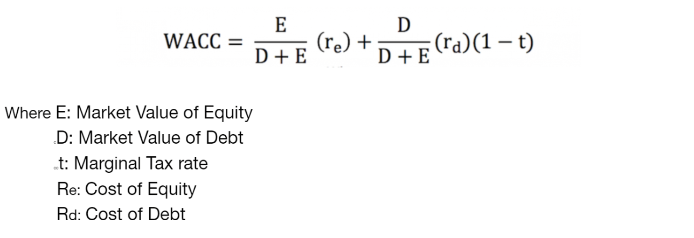
E and D are the weights used and thus WACC is the weighted average of the cost of equity and debt which altogether is also called the cost of capital. We used the market value as weights not because the market is right but because that is what it would cost us to buy the company in the market today, even if we think the price is wrong.
Computation of Cost of Equity
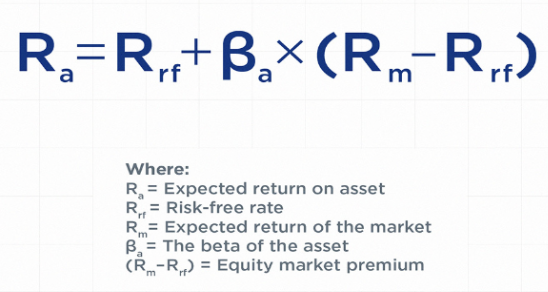
Cost of equity is the return that a company requires for an investment or project, or the return that an individual requires for an equity investment. It can be calculated using the capital asset pricing model (CAPM) and is represented as a rate (percentage).
Risk-Free rate
The risk-free rate of return is the interest rate an investor can expect to earn on an investment that carries zero risk. In practice, the risk-free rate is commonly considered to be equal to the interest paid on a 10-year highly rated government Treasury note, generally the safest investment an investor can make.
But not all governments are equally default-free. Some of them are not AAA rated and thus have a country risk premium (CRP) that is defined as the extra interest rate the investors charge for default risk. This CRP is then incorporated into the CAPM for cost of equity calculation. This can be done in three ways.
The first approach assumes that every company in the foreign country is equally exposed to country risk. While this approach is commonly used, it makes no distinction between any two companies in the foreign country, even if one is a huge export-oriented firm and the other is a small local business. In such cases, CRP would be added to the mature market expected return so that CAPM would be:
The second approach assumes that a company's exposure to country risk is similar to its exposure to other market risk. Thus,
The third approach considers country risk as a separate risk factor, multiplying CRP with a variable (generally denoted by lambda or λ). In general terms, a company that has significant exposure to a foreign country—by virtue of getting a large percentage of its revenues from that country or having a substantial share of its manufacturing located there—would have a higher λ value than a company that is less exposed to that country.
Beta
The beta measures how variable the stock's price is in comparison to the market. Beta can also be thought of as a stock's sensitivity to market changes - a sensitive stock will be very volatile (have a high beta), whereas a more stable stock will not react as much to fluctuations in the market (have a low beta).
Beta can be calculated either by regression or using a bottom up approach (also called a bottom up beta).
Regression beta is calculated by running a regression between the company’s stock price and the stock price index over some historical period and the slope obtained is considered as the beta. It is considered to have the following problems:
1. Since it is based on a regression, it usually has a high standard error associated with it.
2. It represents the firm’s business mix and leverage over the regression (historical) period rather than its current business mix and leverage.
Even when the regression looks very good, that is also a problem. For instance, in the following regression beta estimation for Nokia, the regression looks perfect with great R-squared value and low standard error. But in reality, the stock index used there is Helsinki Stock Exchange and Nokia contributed to 80% of the index at that time. This beta obtained thus is highly irrelevant.
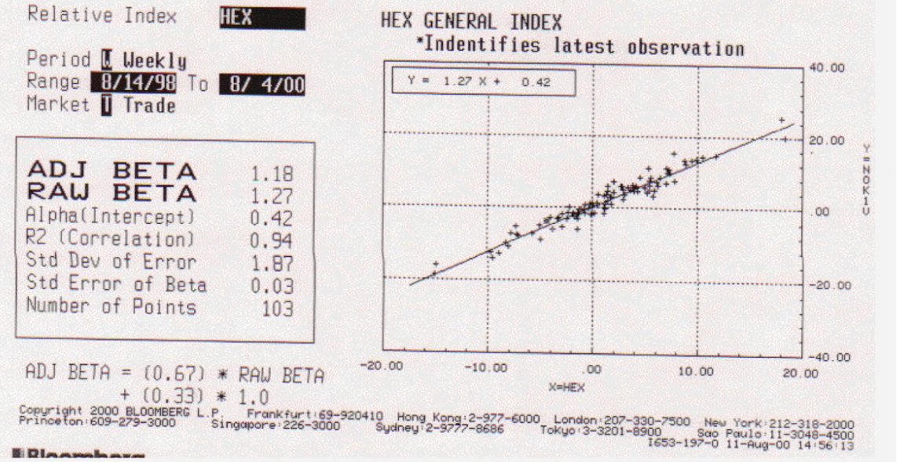
So a better method for calculating beta is the bottom up approach where we break the company’s business into various industries it caters to. For example, a company can be catering to both software as well as IT consulting fields. Then we obtain the average of the betas for both of these industries, and then calculate the unlevered beta as the weighted average of both of these averaged out betas with the weights being the percentages of revenue coming from each of these industries. Then, this unlevered beta is converted into levered beta by taking into account the marginal tax rate (t) and the debt to equity ratio (D|E ratio) of the company/firm. This levered beta is called bottom up beta.
Bottom up Beta = (Unlevered Beta) x [ 1+ (1-t)(D|E ratio) ]
Bottom up betas are better than a regression beta for three reasons-
- They are more precise. The standard error in a bottom-up beta estimate is more precise because we are averaging across regression betas. The savings will approximate 1/ Square root of the number of firms in the sample. Thus, even if the firm is only one business and has not changed its debt to equity ratio over time, we will be better off using bottom up betas.
- If a firm has changed its business mix, we can reflect that more easily in a bottom-up beta because you set the weights on the different businesses. A regression beta reflects past business mix choices.
- If a firm has changed its debt to equity ratio, the bottom up beta can be easily adjusted to reflect those changes. A regression beta reflects past debt to equity choices.
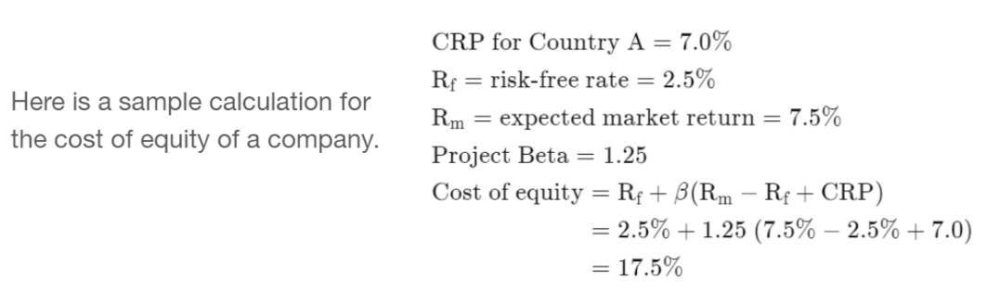
Computation of Cost of Debt
The cost of debt is the total interest expense owed on a debt. Put simply, the cost of debt is the effective interest rate or the total amount of interest that a company or individual owes on any liabilities, such as bonds and loans. This expense can refer to either the before-tax or after-tax cost of debt. The degree of the cost of debt depends entirely on the borrower's creditworthiness, so higher costs mean the borrower is considered risky.
After Tax Cost of Debt = Risk free rate of return + Credit Spread
A credit spread is a difference in yield between a U.S. Treasury bond and another debt security of the same maturity but different credit quality.
STEP 3: CALCULATE TERMINAL VALUE
Terminal value of a company is the value of its future free cash flows from the last projected year until the end of time.
It can calculated using two methods:
-
1) Perpetuity growth method.
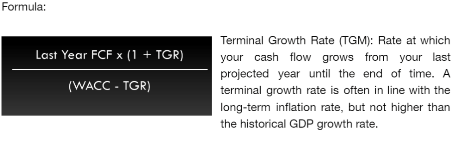
2) Exit multiplier method:The method is predicated on the idea that a business's value may be determined at the end of a projected period by using the public market valuations of similar companies that are currently in operation.
To calculate the terminal value, you multiply the last projected cash flow by a multiple, known as exit multiple. EV/EBITDA and EV/EBIT are the two multiples that are most often used.
Enterprise value(EV): It is a measure of the total value of the company.
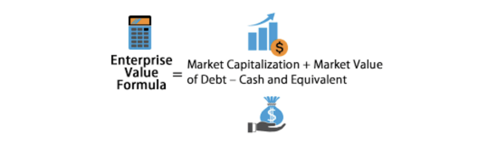
STEP 4: DISCOUNT BACK TO CURRENT PRICE
Recall the concepts of TVM, here we use WACC to discount back to the current price. Adjust the formula accordingly.
FV= future FCF
Rate of interest= WACC.
Current valuation will be the sum of the present value of the cash flows and present value of terminal value.
DCF IS DONE!
"Valuation is like an onion; the more layers you peel, the more likely you are to shed a tear.", this quote looks true for sure after going about the whole process!
DCF cannot be used for all types of companies as there are companies which show negative cash flow(operating in loss). So an ideal company to judge via DCF should have been present for decades like Infosys, General Electric etc. It can also be used to assess the stock price of a company.
It is a very flexible tool where your assumption on growth rate matters, hence assumptions should be made carefully to get the most accurate predictions.
So how can we obtain an accurate DCF?
Try to include various scenarios: Use different assumptions for different cases. For eg : Low growth case, normal/base case, optimistic case etc
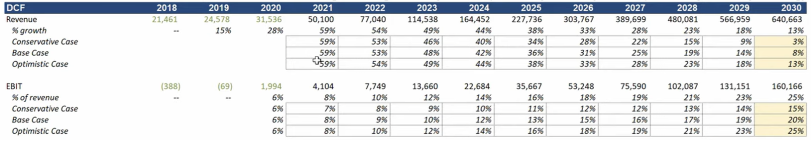
Here is an excel sheet with the DCF evaluation of BMW.
DCF Modeling (1).xlsx
Let's now explore scenarios where various valuation methods, other than the Discounted Cash Flow (DCF) method, might be more appropriate used:
1.Initial Public Offerings (IPOs):
Comparable Transactions Analysis (CTA), this method involves analyzing the financial metrics of companies that have recently been involved in similar transactions and are often used by investment banks to determine an appropriate valuation. This is because there might be limited historical cash flows available for a new public company
2.Startups and Early-Stage Companies:
As the cash flows are uncertain, the Venture Capital Method is used for early stage startups.It involves estimating the exit valuation of the company based on assumptions about future financing rounds and exit scenarios.
3.Companies in Distress or Liquidation:
Liquidation Valuation is relevant during this scenario .In this method, the company is valued based on the assumption that it will be liquidated. Assets are sold, and liabilities are paid off, with the remaining value considered as the company's worth.
4.High-Growth Industries:
In industries with rapid growth and evolving market dynamics, scenario analysis might be more applicable.This involves assessing the value of a company under different scenarios and assigning probabilities to those scenarios. It helps capture the uncertainty and risk associated with future cash flows.
We have reached the end of the blog! Hope you have learnt something new.
Leaving you with a quote to ponder upon
"Valuation is not about finding the 'right' number, but about understanding and managing the risks that come with uncertainty." - Pablo Fernandez